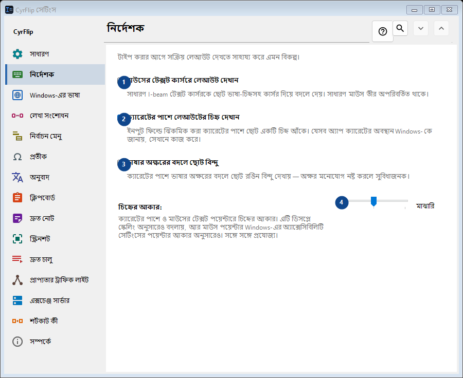
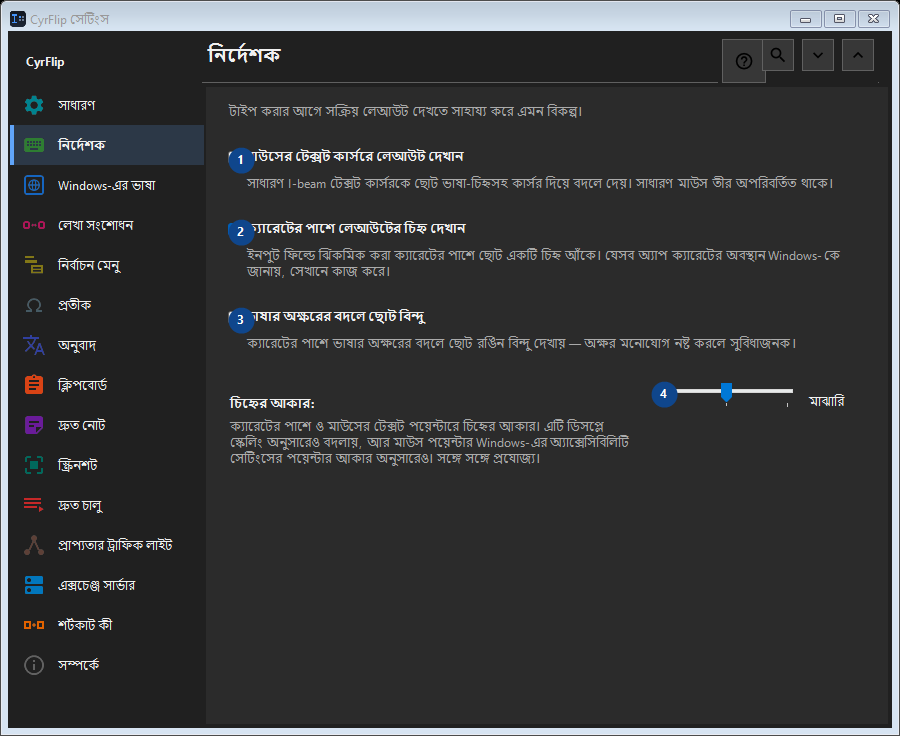

নির্দেশক
এর কাজ
টাইপ করার আগে সক্রিয় লেআউট দেখতে সাহায্য করে এমন বিকল্প।


ব্যবহারের ক্রম
সেটিং সঙ্গে সঙ্গে প্রয়োগ হয়। নির্দিষ্ট ক্রম নেই; নিচের দলগুলি ব্যবহার করুন।
উপাদান
1. মাউসের টেক্সট কার্সরে লেআউট দেখান
সাধারণ I-beam টেক্সট কার্সরকে ছোট ভাষা-চিহ্নসহ কার্সর দিয়ে বদলে দেয়। সাধারণ মাউস তীর অপরিবর্তিত থাকে।
আপনার শর্টকাট2. ক্যারেটের পাশে লেআউটের চিহ্ন দেখান
ইনপুট ফিল্ডে ঝিকমিক করা ক্যারেটের পাশে ছোট একটি চিহ্ন আঁকে। যেসব অ্যাপ ক্যারেটের অবস্থান Windows-কে জানায়, সেখানে কাজ করে।
আপনার শর্টকাট3. ভাষার অক্ষরের বদলে ছোট বিন্দু
ক্যারেটের পাশে ভাষার অক্ষরের বদলে ছোট রঙিন বিন্দু দেখায় — অক্ষর মনোযোগ নষ্ট করলে সুবিধাজনক।
আপনার শর্টকাট4. চিহ্নের আকার
পাশের লেবেল অনুযায়ী মান বাছুন বা লিখুন। এগোনোর আগে পরীক্ষা করুন।
আপনার শর্টকাট